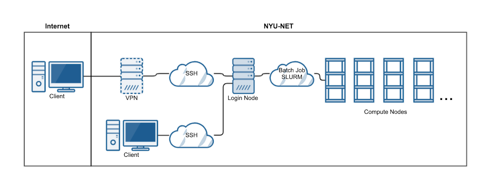

System¶
Overview¶
The operating system on Jubail is Linux. Make sure you know the basics. Useful links:
Generic diagram of the cluster architecture and outside connectivity.
Hardware¶
The new HPC cluster includes the integration of previous HPC cluster Dalma with Jubail HPC cluster.
The Jubail HPC consists of more than 29K CPU cores, while Dalma HPC comprises over 12K. But it is very unlikely that your code can scale up to use them all (contact us directly if you are confident). From the user perspective, here are the important specifications for most nodes:
HPC Node |
CPU Model |
Cores per Node |
Total Memory |
Memory per Core |
Serial Job Limit |
Non-MPI Max Cores |
MPI Multi-Node |
Remarks |
|---|---|---|---|---|---|---|---|---|
Jubail |
AMD EPYC 7742 64-Core Processor @2.25GHz, supporting AVX2 |
128 |
480 GB |
3.75 GB |
1 |
128 |
Use multiples of 128 |
|
Dalma (28 cores) |
Intel(R) Xeon(R) CPU E5-2680 v4 @ 2.40GHz, supporting AVX2 |
28 |
112 GB |
4 GB |
1 |
28 |
Use multiples of 28 |
|
Dalma (40 cores) |
Intel(R) Xeon(R) Gold 6148 @ 2.40GHz, supporting AVX-512 |
40 |
480 GB |
12 GB |
1 |
40 |
Use multiples of 40 |
#SBATCH --constraint=dalma,512g
|
Important
Serial job limit means jobs with no threading should request only 1 core.
Non-MPI Max Cores means for jobs without MPI, stay within a single node.
MPI multi-Node ensures you utilize whole nodes, avoiding wasted resources, where the requested number of cores is divisible by the “Cores per Node” value.
Contact us if you need special configuration (extra large memory, GPU, etc…)
Typical Workflow¶
(One time only) Let us know your computational requirement.
(One time only) Apply an HPC account and pass our quiz.
If needed, transfer your input data to the HPC.
Log on to HPC login nodes.
Submit jobs from login nodes.
Your jobs will queue for execution.
Once done, examine the output.
Summary of Nodes¶
Compute Nodes:¶
Node Type
|
Num Nodes
|
CPUs / Node
|
MEM / Node
(RAM)
|
____________Remarks____________
|
|---|---|---|---|---|
Bigmem Jubail |
1 |
128 |
1 TB |
AMD EPYC 7742
Memory requirement > 480 GB
|
Jubail |
233 |
128 |
480 GB |
AMD EPYC 7742 |
Bigmem Dalma |
4 |
32 / 64 / 72 |
1 TB / 2 TB |
AMD EPYC 7551
Intel(R) Xeon(R) CPU E7- 8837
Intel(R) Xeon(R) CPU E7-8867 v4
Memory requirement > 480 GB
|
Dalma |
432 |
28 / 40 |
112 GB / 480 GB |
Intel(R) Xeon(R) CPU E5-2680 v4
[Small jobs < 28 CPUs]
Intel(R) Xeon(R) Gold 6148
|
GPU Nodes:¶
Node Type
|
Num Nodes
|
CPUs / Node
|
MEM / Node
(RAM)
|
GPUs / Node
|
MEM / GPU
(VRAM)
|
Num GPUs
|
___________Remarks___________
|
|---|---|---|---|---|---|---|---|
Jubail |
36 |
64 / 128 |
480 GB |
1 / 2 / 3 / 4 |
40 / 80 |
101 |
Nvidia A100
AMD EPYC 7543
AMD EPYC 7742
|
Dalma 1TB |
2 |
40 |
1 TB |
8 |
32 |
16 |
Nvidia Tesla V100
Intel(R) Xeon(R) Gold 6148 CPU
|
Dalma |
11 |
40 |
320 GB / 384 GB |
2 |
32 |
22 |
Nvidia Tesla V100
Intel(R) Xeon(R) Gold 6148 CPU
|
Visual Nodes:¶
Node Type
|
Num Nodes
|
CPUs / Node
|
MEM / Node
(RAM)
|
GPUs / Node
|
MEM / GPU
(VRAM)
|
Num GPUs
|
__Remarks__
|
|---|---|---|---|---|---|---|---|
Visual |
4 |
32 |
112 GB |
2 |
8 |
8 |
GUI Nodes |
Access¶
Once your account is ready, you can access Jubail HPC with Linux or Mac in NYU AD/NY network. Simply ssh in your local terminal:
ssh <NetID>@jubail.abudhabi.nyu.edu
If you use Windows or outside NYU AD/NY network, follow the instructions here: Access Jubail.
Whenever you login, you land up on one of the four login nodes, which is shown on left most section of
your terminal.It may look something like [wz22@login2 ~]$ suggesting that you are on the second login node.
Access allowed by pam_access
- - - - - - - - - - - - - - - - - - - - - - - - - - - - - - - -
Welcome to Jubail!
For documentation & examples: https://crc-docs.abudhabi.nyu.edu
For support: nyuad.it.help@nyu.edu
- - - - - - - - - - - - - - - - - - - - - - - - - - - - - - - -
Last login: Wed Feb 15 15:27:08 2023 from 10.224.42.159
Disk quotas for wz22 (uid 3387153):
DISK SPACE # FILES (1000's)
filesystem size quota number quota
-------------------------- --------------------------
/home 92KB 50GB ( 0%) 0 500 ( 0%)
/scratch 4KB 5000GB ( 0%) 0 500 ( 0%)
/archive 4KB 5120GB ( 0%) 0 125 ( 0%)
[wz22@login2 ~]$
Important
Please refrain from running jobs on the login nodes. This can lead to your account getting suspended.